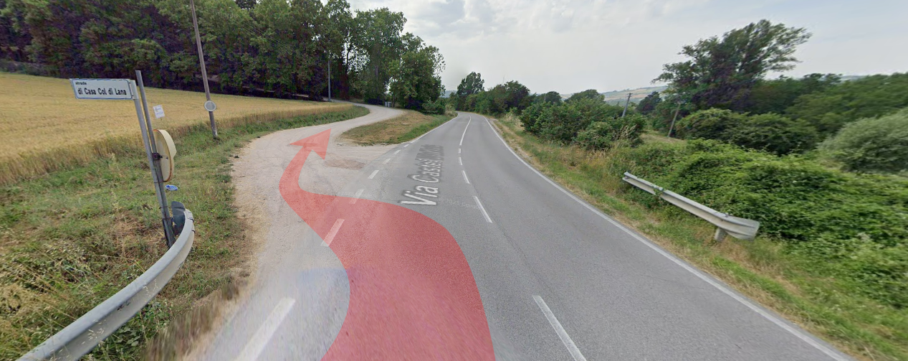

Location
Abbazia Castel d'Alfiolo
Gubbio
Gubbio
Come arrivare
Indicazioni: da Umbertide seguire per Gubbio -> poi Ospedale-Gubbio-Fano-Ancona, proseguire fino a Padule -> uscire a Padule-Spada e svoltare verso Padule -> dopo il distributore Q8 proseguire per Spada -> e poi per Castel d'Alfiolo.
Apri in Google Maps